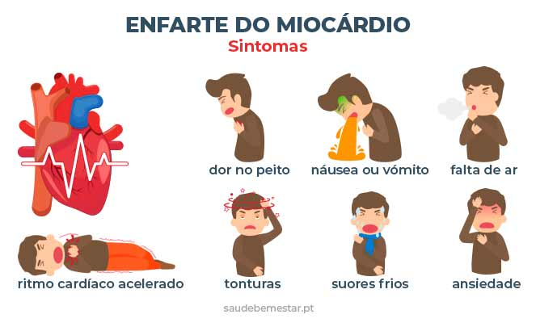
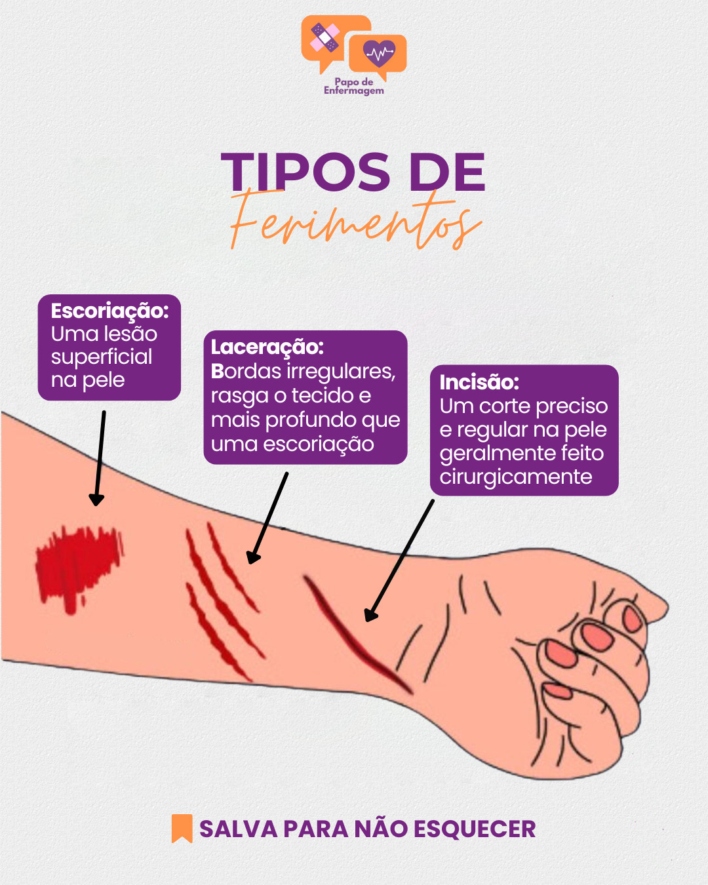
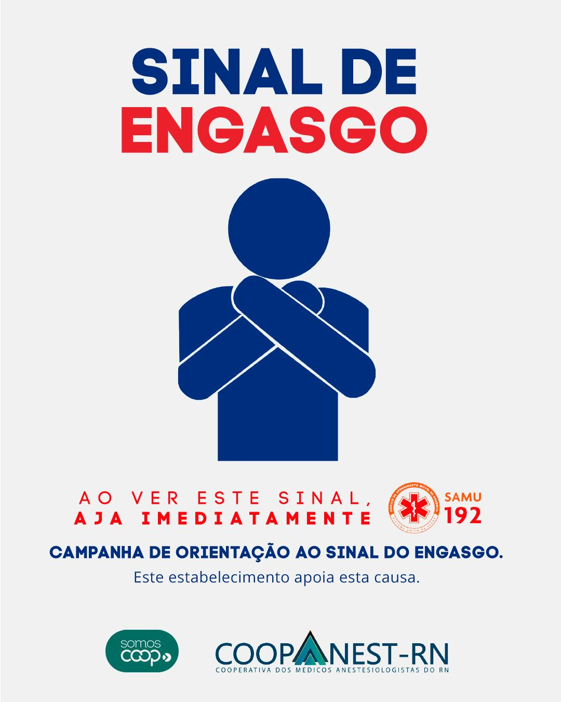
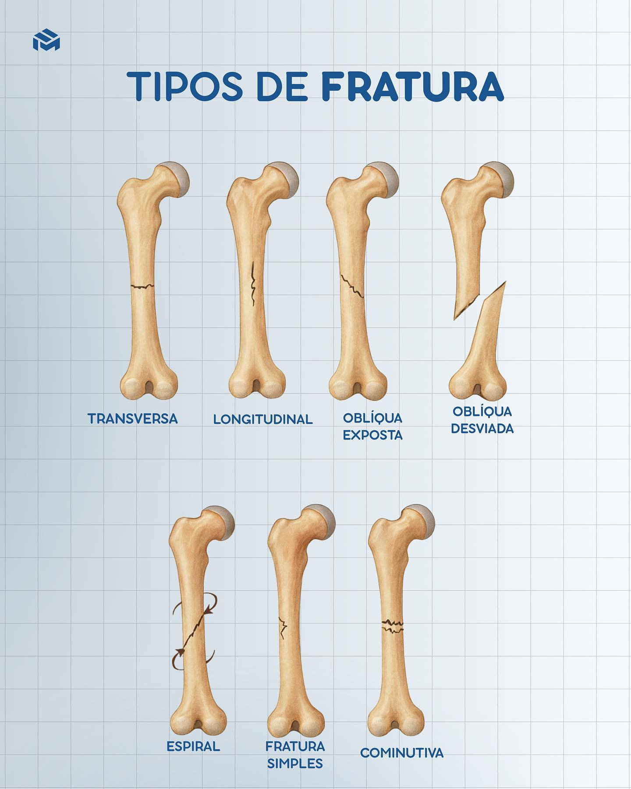
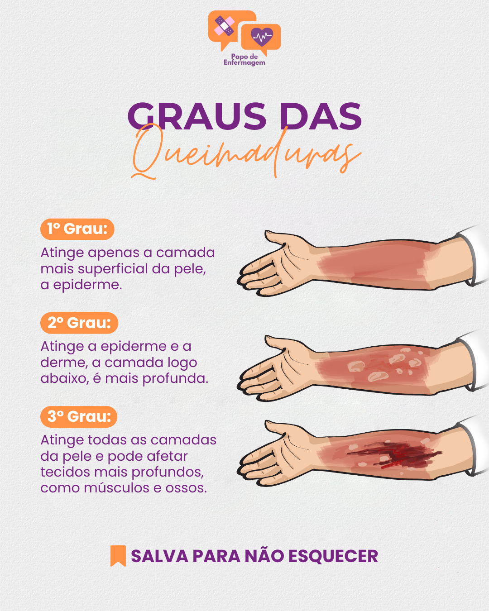

Este guia oferece informações essenciais sobre como agir em situações de emergência médica.
Como identificar: Um ataque cardíaco (infarto) geralmente se manifesta com dor ou aperto intenso no peito, que pode irradiar para braços (especialmente o esquerdo), pescoço, mandíbula ou costas, durando mais de 20 minutos. Sintomas como suor frio, falta de ar, náuseas, tontura e ansiedade também são comuns.
Como identificar: Cortes e feridas envolve avaliar a profundidade, a extensão, o tipo de borda (reta ou irregular) e o nível de sangramento. Cortes superficiais geralmente afetam apenas a epiderme, enquanto feridas profundas podem atingir músculos, tendões e gordura.
Como identificar: os principais sinais a tosse súbita, dificuldade para respirar, lábios ou rosto azulados, e o sinal universal (levar as mãos ao pescoço). Em casos totais, a pessoa não consegue falar ou tossir, podendo desmaiar. Aja imediatamente se notar esses sintomas.
Como identificar: uma fratura envolve observar dor intensa e imediata no local, inchaço rápido, hematomas (manchas roxas), deformidade visível (membro torto ou fora do lugar), crepitação (som de ossos raspando) e incapacidade de movimentar ou apoiar o membro. Em casos graves, o osso pode romper a pele.
Como identificar: uma queimadura envolve avaliar a profundidade (1º, 2º ou 3º grau) com base na aparência da pele, cor, presença de bolhas e nível de dor. Queimaduras de 1º grau causam vermelhidão e dor (sol); 2º grau gera bolhas e dor intensa; 3º grau atinge tecidos profundos, ficando esbranquiçada ou carbonizada com pouca dor.
Em caso de emergência, ligue para os seguintes números:
Disque 192 para acionar o SAMU (Serviço de Atendimento Móvel de Urgência) para problemas de saúde (AVC, dor no peito, mal súbito).
Para mais informações entre em contato através do site:
SAMUDisque 193 para acionar o Corpo de Bombeiros em caso de incêndios, acidentes, resgates, salvamentos.
Para mais informações entre em contato através do site:
Disque 190 para acionar a Polícia Militar em casos envolvendo crimes, roubos, brigas.
Para mais informações entre em contato através do site:
Disque Denúncia usando 181 para reportar atividades criminosas, foragidos, tráfico de drogas, maus-tratos a animais e outros delitos de forma anônima.
Para mais informações entre em contato através do site:
Disque DenúnciaImportante: Forneça informações claras sobre a situação, localização exata e siga as instruções do atendente.
911 e 112: São agora números válidos no Brasil, funcionando como um canal unificado para emergências, geralmente direcionando para a Polícia Militar (190).
Em caso de dúvidas consultar um profissional de saúde.